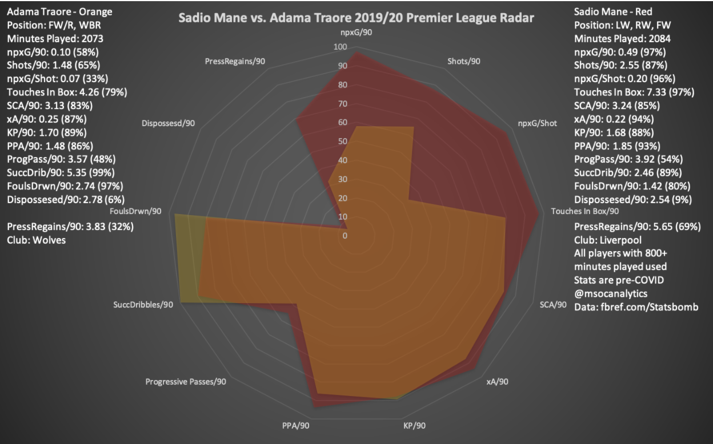
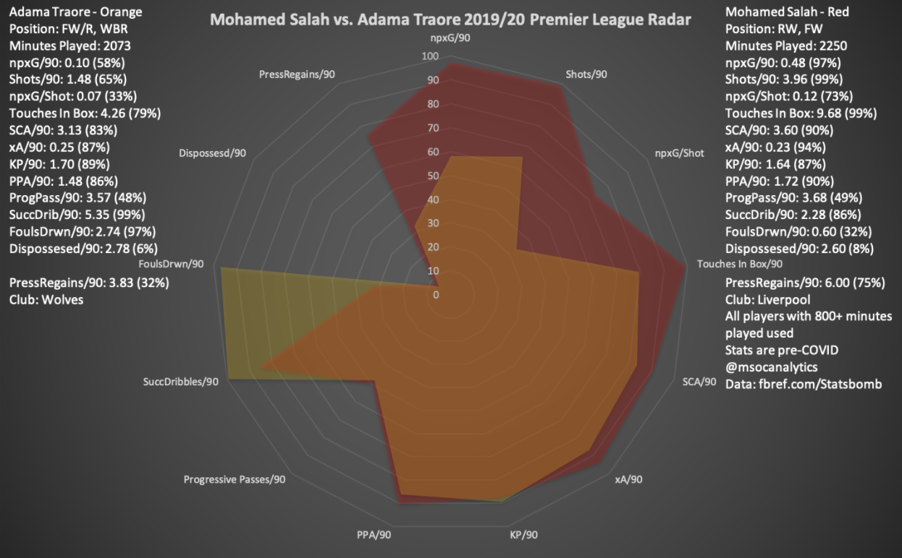
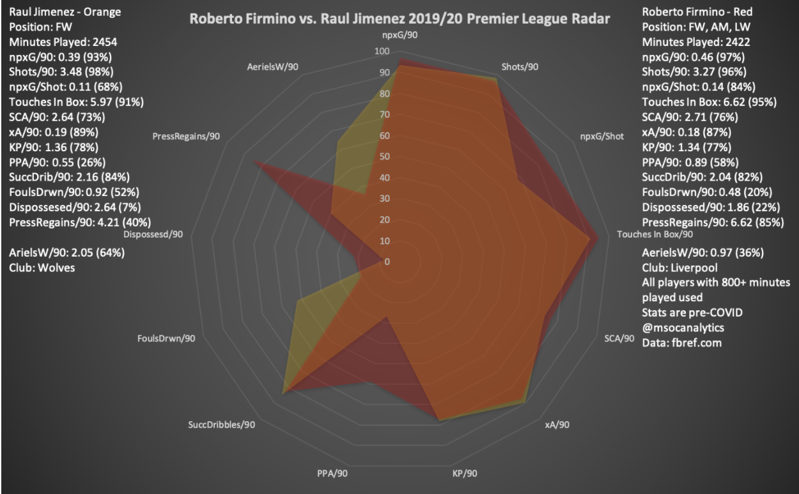
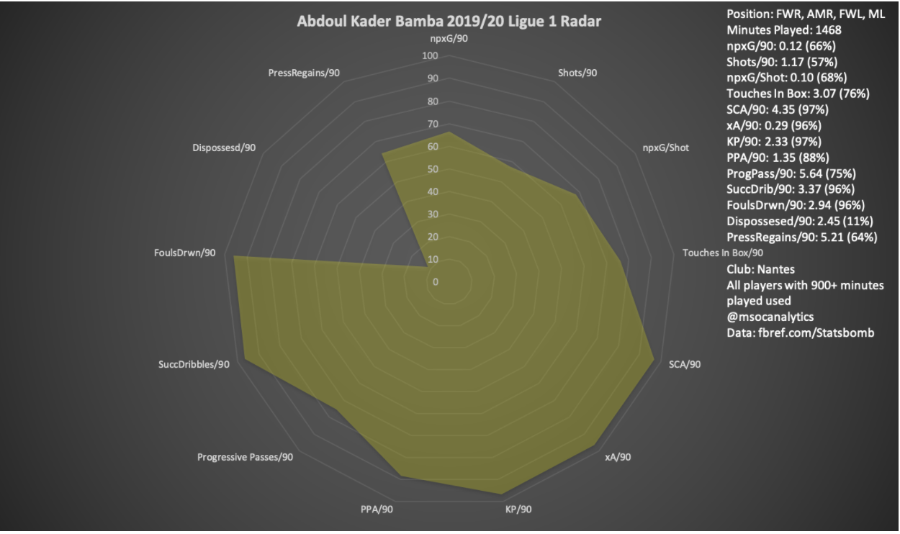
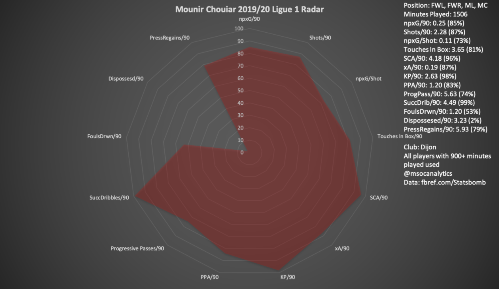
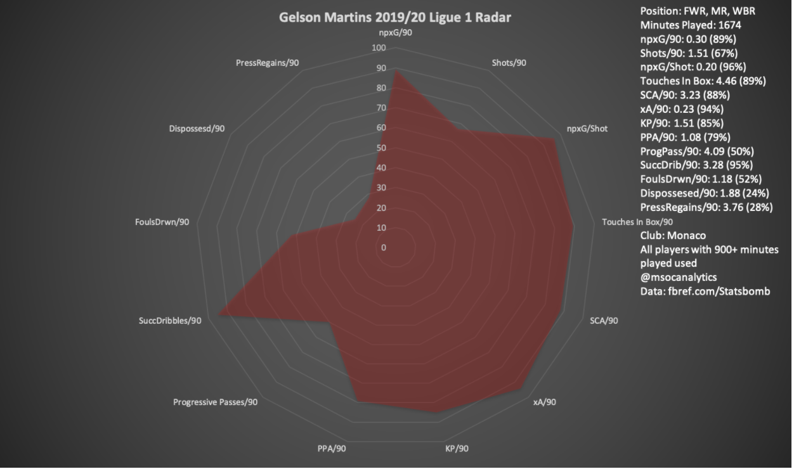
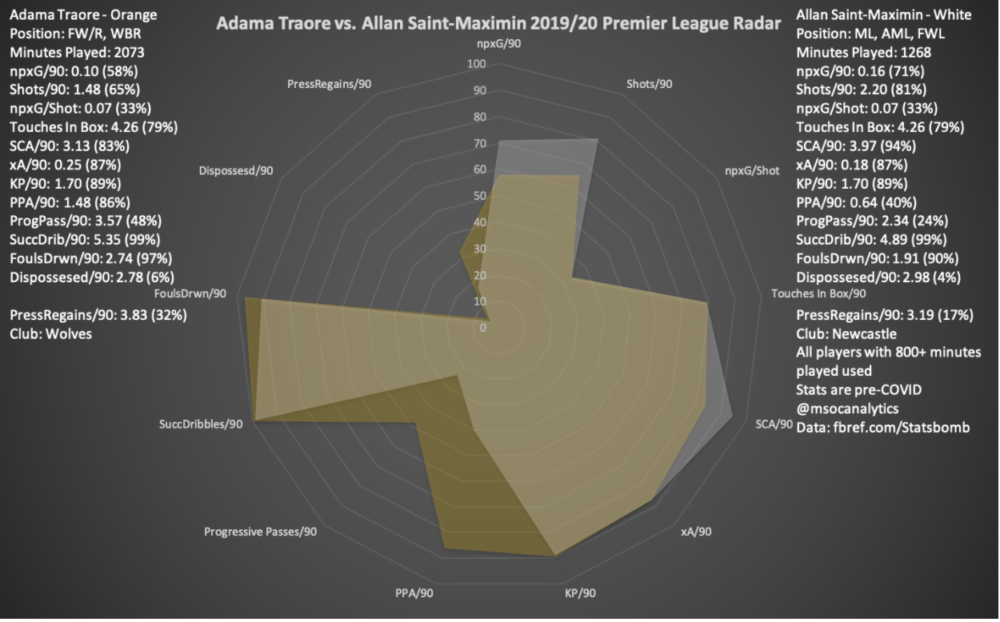

Background
“At the moment I would say he is, pretty much, unplayable. I've said it now a couple of times and it is still true.”
Those words from Jurgen Klopp in January about Adama Traoré revealed the extent of his admiration for the 24-year-old Wolves winger. Liverpool have been heavily linked in recent weeks with a move for Traoré who has tallied four goals and nine assists in the Premier League this season.
The 2019-20 season has been a breakout campaign for Traoré who moved from Middlesbrough in 2018 for a fee of $22 million. At the time his market value was just $8.8 million according to Transfermarkt — but with Traoré his value has always been about his potential not necessarily his current ability.
Under Wolves manager Nuno Espirito Santo, Traoré has started to realize that potential and Liverpool have taken notice. He scored both goals in a 2-0 win away at Manchester City in October 2019, a statement victory from Wolves over the defending champions and an incredible display by Traoré himself. His pace, playmaking and crossing makes him incredibly dangerous in open play. However, he may take more time to adjust to Merseyside than Liverpool fans expect.
Positional Fit at Liverpool
Traoré has been utilized as a traditional right winger in Wolves’ 4-3-3 formation. He uses his stronger right foot to whip in crosses to striker Raul Jimenez and they have combined for 10 goals this season, the most of any duo in the Premier League.
Liverpool manager Jurgen Klopp favors a high intensity pressing style which should suit Traoré, who is well known for his physical fitness. However, Klopp prefers to play with inverted wingers/inside forwards meaning left-footed players are on the right side and vice versa. Wingers Mohamed Salah and Sadio Mané are renowned for both their goal scoring and assisting abilities. Mané has 15 goals and nine assists in the league and Salah has 17 goals and seven assists in the league.


Traoré’s player radar is similar to both Mané and Salah in terms of his creative metrics - like expected assists, progressive passes, key passes and shot creating actions. The striking differences are in the goalscoring department. Mané and Salah are in the 97th percentile or above for non-penalty expected goals (npxG/90) and touches in the box. Adama is in the 58th percentile for npxG/90 and in the 79th percentile for touches in the box. If he moves to Liverpool he will be used closer to the goal and have fewer defensive duties than Wolves required of him, and that should give him more opportunities to score himself. The question is will Adama be able to adapt to a more attacking role?

Liverpool’s wing players are expected to shoulder a larger burden of the scoring because their starting striker Roberto Firminho is known more for his creativity than his finishing, he has eight goals and seven assists this season in the Premier League. Operating as a false nine he drops deep into the midfield to receive the ball with his back turned to goal.
Without traditional No. 9 Raul Jimenez to link up with near the goal it may be difficult for Adama to hit the ground running at Anfield. Jimenez assisted both of Traoré’s goals in the aforementioned Manchester City game. The Mexican striker is also more of an aerial threat with 8 headed goals in the Premier League. Should Traoré move to Anfield, his partnership with whoever plays at the center forward position (Firmino, Salah, Origi) will be key.
Traoré should be able to adapt to playing on the left side or Klopp could elect to keep him on the right considering how effective he has been at Wolves. Regardless of where he plays, Traoré will make an impact. It’s easy to overcomplicate things with a player as dynamic as him, Liverpool sees a prolific attacker in Traoré and would love to add to increase their depth on the wing. Liverpool’s counterattacks are already devastating, especially off set pieces — having Adama Traoré running at your defense alongside Mohamed Salah and/or Sadio Mané is a scary thought.
Four Potential Traoré Replacements for Wolves
Bargain Buy: Abdoul Kader Bamba (Club: Nantes; Age: 26; Pos: FWR, AMR, FWL, ML; Value: €1.6 mil)

Abdoul Kader Bamba is not a name that you have likely heard before. The 26-year-old winger plays for FC Nantes in Ligue 1 and is both the oldest and the cheapest option on this list.
Capable of playing on both wings, he had only one goal and three assists in Ligue 1 this season. But similarly to Traoré he excels at dribbling and creating chances for others with 3.37 successful dribbles (SuccDrib/90) and 0.29 expected assists (xA/90). Kader Bamba is also more of a playmaker with 2.33 key passes (KP/90) and 4.35 shot creating actions (SCA/90) compared with Traoré’s totals of 1.70 and 3.13 respectively. Kader Bamba plays with a flair and freedom typical of wingers. He has a dizzying array of stepovers and flicks he uses to create space.
This could be a steal for the Wolves. Kader Bamba is valued at just €1.6 million and played on the Nantes B team as recently as 2019. It’s always difficult to judge how a player will transition leagues especially between Ligue 1 and the Premier League, but unlike other options there is a lower risk because of the reduced price.
Wonder Kid: Mounir Chouiar (Club: Dijon; Age: 21; Pos: FWL, FWR, ML, MC; Value: €7.2 mil)

Chouiar’s player radar is impressive considering he’s only 21-years-old, though playing in Ligue 1 of course comes with a grain of salt. Typically deployed as an inverted left winger he prefers to cut inside on his stronger right foot to curl shots towards the far post. His style of play reminds me of Bayern Munich’s Kingsley Coman, both have slight frames and are silky smooth on the ball. Chouiar can play on both sides of the pitch and has similar attacking output as Traoré. Chouiar averages 0.19 xA/90, 2.63 KP/90 and 4.49 SuccDrib/90 while Traoré averages 0.25 xA/90, 1.70 KP/90 and 5.35 SuccDrib/90. His ability as a dead-ball specialist is a bonus as well.
Chouiar is a bit of an unknown quantity moving to Dijon just last September, with less than a season’s worth of play under his belt it could be a hard transition to the Premier League for the French international.
Signing Chouiar would be a cost effective move, he’s valued at €7.2 million according to Transfermarkt. It would be a tough sell to Wolves supporters though as an immediate Traoré replacement so this would likely be a signing for the future for Wolves.
Best Candidates: Gelson Martins (Club: Monaco; Age - 25; Pos: FWR, MR, WBR; Value: €20 mil)

A former wonderkid, Gelson Martins has played at some of Europe’s most storied clubs: Sporting CP, Atletico Madrid and now Monaco. He is part of an eclectic group of talents at Monaco, including Cesc Fàbregas, Tiemoué Bakayoko, Aleksandr Golovin, Keita Baldé and Wissam Ben Yedder. However, Monaco have struggled since their 2017 Champions League semi-final squad was raided by Europe’s elite clubs and Martins could be their next player to be purged by a Premier League side.
Martins is right footed and primarily plays on the right wing. His close control dribbling allows him to wriggle out of tight corners and his burst of acceleration can leave defenders in the dust. When Martins receives the ball he typically drives hard to the byline before unleashing a cross or cutting the ball back to a trailing teammate. He has an eye for goal as well averaging 0.30 npxG/90 and typically has his best chances on the receiving end of crosses. Traoré in comparison averages just 0.10 npxG/90. Martins and Traoré average 0.23 and 0.25 xA/90 respectively. The Portuguese international totaled four goals and one assist in 21 Ligue 1 appearances this season.
Wolves would be getting a flashy and talented player in need of a stable club and regular playing time. The Wanderers’ connection with Portuguese super agent Jorge Mendes could help bring yet another Portuguese player to Molineux.
Espirito Santo’s style of play is about teamwork and attacking partnerships, for Martins it could be difficult to adjust to the increased team mentality that Wolves and the Premier League requires. But this would be far less of a gamble than Chouiar and Kader Bamba because of his track record outside of Ligue 1.
With four years remaining on his contract Monaco won’t feel pressured to sell unless COVID-19 has dented their finances. A transfer of €20-30 million could be a reasonable deal to replace a player as influential as Traoré.
Best Candidates: Allan Saint-Maximin (Club: Newcastle; Age: 23; Pos: ML, AML, FWL; Value: €19.6 mil)

As a Newcastle fan this pains me. I love watching Saint-Maximin play and would be loath to see him leave Tyneside. But his style of play and his player radar is remarkably similar to Traoré. For Saint-Maximin this would be a step up with the opportunity to play European football. He has been the best player for Newcastle this season with a 7.28 average rating according to WhoScored. The Frenchman has three goals and two assists this season in the Premier League and seems to be improving every single week. Those stats don’t pop off the page but playing in a side as negative as Newcastle his impact goes beyond goals — the Magpies have won 45% of the games he has played in and just 10% of games where he didn’t play.
Wolves would be getting a prolific dribbler (4.89 SuccDrib/90) who is a similar creative threat and a winger who can play on both sides of the field. What Saint-Maximin lacks in progressive passes (2.34) he makes up for with his shots (2.20) and npxG (0.16). Traoré in comparison averages 3.57 progressive passes, 1.48 shots and 0.10 non-penalty expected goals.
Saint-Maximin is one of the most electrifying players in the Premier League and poses a major threat on the counterattack which suits Wolves’ style of play.
The Newcastle hierarchy (takeover or not) will have no intentions of letting the French winger go and I would expect their asking price to be at least €30 million. Buying domestically would make sense for Wolves as they would be looking for someone to hit the ground running. But would Wolves be willing to pay top dollar for him? It likely depends on how much they receive for Traoré, but the answer should be yes.
Note: All stats referenced are per 90 minutes